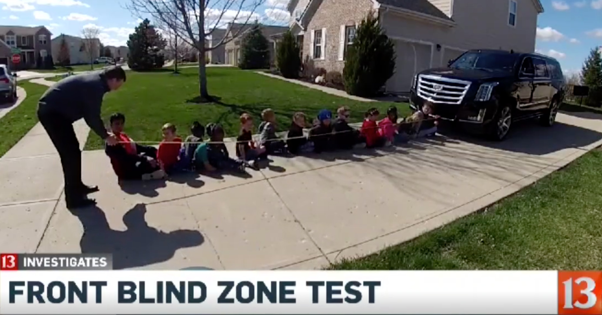
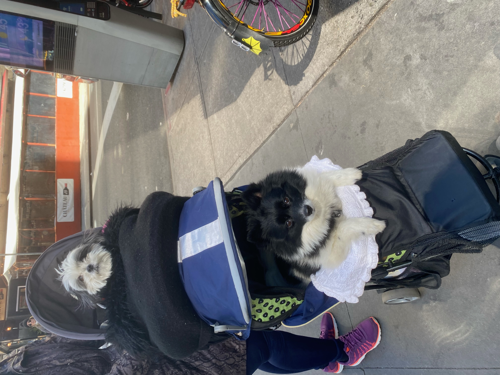

Saturday, April 1st
10 of the things that it was most difficult to shut up about this month:
- Microgreens! - In true Michael Pollan fashion, I spent the month of March following my microgreens from seed to table. Microgreens are essentially the edible seedling of vegetables and herbs. They are a nutritional supplement and a flavor and texture enhancement. They are insanely nutrient dense- loaded up with vitamins C, E, and K, lutein, and beta-carotene- almost 40 (!!) times than the mature leaves of the same plants. While the health factor is exciting, it pales in comparison to the thrill of consuming these greens one week after planting them in a plastic takeout container.
- Red alert: TR4 fungus is causing bananas to go extinct. This Bon Appetit article explains the history, impact, and concern of this phenomenon. It covers some potential solutions scientists have implemented, like genetically modifying banana plants to create stronger variants and introducing microorganisms to compete with the fungus. It also highlights the danger of our food system’s dependency on monoculture. Savor every single banana you eat, brown spots included.
- YOU Season 4 -Every time I talk about this show it is in one of two ways. The first is an embarrassing confession that yes, I do binge-watch Penn Badgely kidnap and randomly murder people in an extremely unrealistic fashion and enjoy it. And the second is debating murder theories and analyzing character arcs with friends as if someone’s life truly does depend on it. I did enjoy watching this season, and I was further impressed at how Netflix has managed to make four seasons of a show with the exact same storyline and still keep it interesting. [If you haven’t been sucked in yet - stay away]
- Pottery Class at the Clay Lounge - I attended a one time pottery workshop (funded by my wonderful friends) to learn how to make wheel-thrown and slab built pottery pieces. An extremely fun but trying experience.
- The Crane Wife by CJ Hauser- A friend shared this essay with me after reviewing it in a writing class. The essay style is captivating, and the story the writer shares is beautiful. Read!
- This, dare I say, life-changing book light from Amazon for all pre-bedtime readers.
- The previously mentioned booklight has enabled a month of heavy reading. These were the three novels I got through:
- An article about the protests in Peru - I came across the news while exploring the idea of traveling to Machu Picchu. Protests calling for the resignation of the current president and members of Congress have resulted in a lot of violence and unrest across the country for the past several months.
-
The headline: “Vanderbilt University apologizes for using ChatGPT to write mass shooting email”
In response to the school shooting at Michigan State, Vanderbilt University sent an email to students about the tragedy with this parenthetical reference at the bottom of the email- “Paraphrase from OpenAI's ChatGPT AI language model”. The university has released several apologies but nothing can erase how truly mental this interaction is. For every sci-fi movie where AI takes over the world, large language models replacing human empathy was never the opening scene.
Some other interesting related ChatGPT Updates: Elon Musk and others urge AI pause, Italy bans ChatGPT
- This youtube video about SUVs. It’s a lengthy video with a more than annoying narrator so I won’t blame anyone for not watching it. The video explains how dangerous and insane the massive uptick in SUVs and light trucks on the road has been over the past few years. Referencing SUV driver behavior studies and risk profiles, increasing vehicle emissions, uninspiring vehicle safety testing, and pedestrian and cyclist-related accidents, the video paints a very convincing anti-SUV argument. The video highlight: The TyreExtinguishers - a group in Europe whose mission is to “make it impossible to own a huge polluting 4x4 in the world's urban areas” by deflating tires and causing inconvenience for vehicle owners. 
Supplied needed:
- - Microgreen seeds. I planted collards greens - purchased from SproutPeople.org (.org can always be trusted)
- - This five minute long youtube video that explains how to plant the seeds
- - Soil
- - Water
- - Plastic takeout containers
Please enjoy this slideshow of my microgreens:
Special shout out to the friend that got me on the microgreen wave and gifted me my first batch of seeds. (Everyone add microgreen seeds to your gift giving idea list.)
A slab built berry plate. Wash, drain, and eat all in one place. (I bought these berries solely for this photo shoot.)
A cup / bowl / mug container - wheel thrown.

Exquisite lighting
- - And Then There Were None by Agatha Christie (5/5) : An all time favorite book of mine. If you read it once in fifth grade that is not enough, a second reading is essential.
- - Butterfly Garden by Dot Hutchison (4/5): A dark story that should come with a lengthy list of trigger warnings. The story is unique and makes the book hard to put down but I would only recommend it to people who enjoy psychological thrillers.
- - Circe by Madeline Miller (5/5): This book took me back to my 7th grade Language Arts class reading of The Odyssey. A very fun and enchanting read. Any fans of Greek mythology would really enjoy it.

Visibility measured in children
Second hand consumption: My friend sent me this picture once she got to New York and I wanted to share it with everyone.
Happy April :)